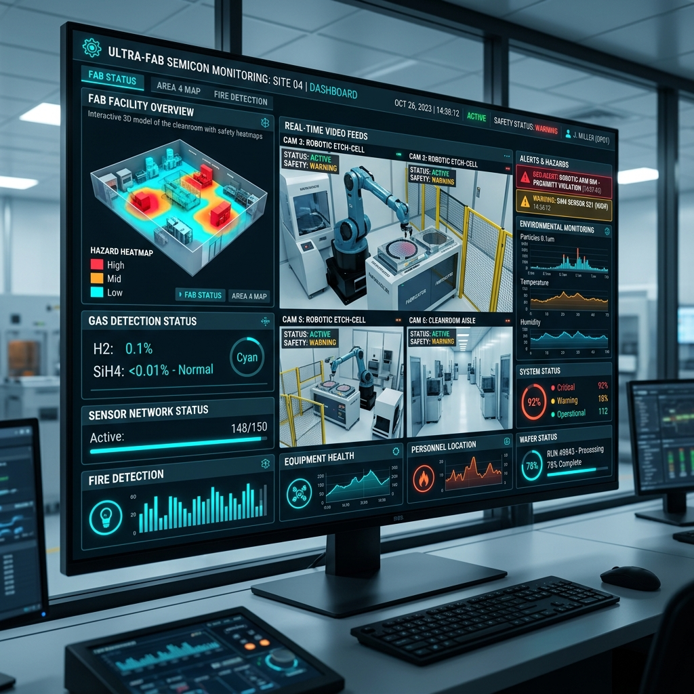
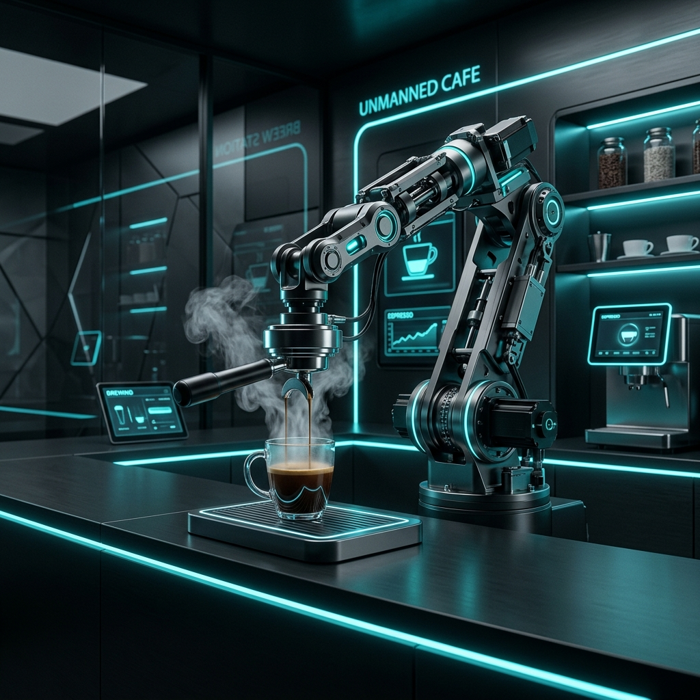
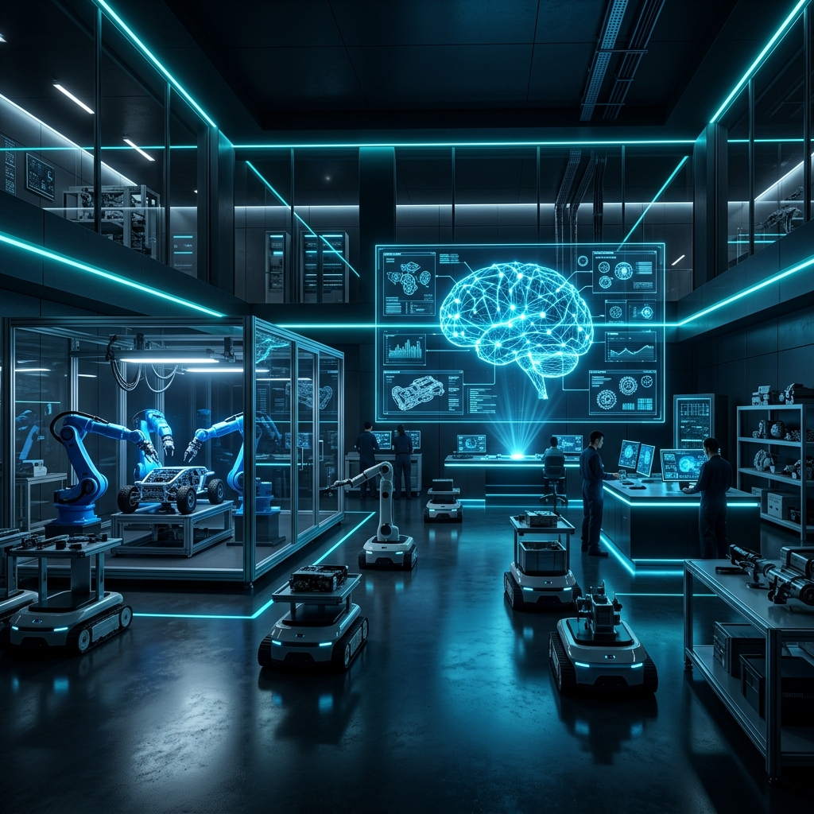

기계공학(Mechatronics), 지능형 제어(Control), 창의적 자동화(Automation)를 결합하여 실용적이고 혁신적인 스마트 솔루션을 설계합니다.
동양미래대학교 로봇자동화공학부 소속의 대표 전공동아리(PD Lab)인 MCA를 소개합니다.
MCA는 기계, 전기, 전자 공학을 복합적으로 응용하여 통신 및 제어회로, 소프트웨어 프로그램을 개발하는 동양미래대학교 로봇자동화공학부 소속의 전공동아리(PD Lab)입니다. 한계를 두지 않는 기술 융합 학습을 통해 산업 현장에서 요구하는 설계 능력을 습득합니다.
인공지능(AI)과 증강현실(AR) 기술을 이용해 자율 환경을 탐색하고 복잡한 명령을 수행하는 로봇 시스템을 설계합니다.
자율주행 서비스 로봇 및 스마트 창고 물류를 위한 센서 융합 기반의 정밀 무인 제어 아키텍처를 연구합니다.
반도체 생산 장비 제어 및 유해 작업장 내 위험물질 관리를 실시간 통합 제어하는 자동화 시스템을 제작합니다.
MCA는 실무 경쟁력을 높이고 유기적인 협업 능력을 배양하기 위해 다양한 활동을 추진합니다.
학습한 전공 지식을 실제로 구현하는 단계입니다. 임베디드 펌웨어 작성, 제어 회로 설계, 기계 부품 모델링 등의 기술을 복합적으로 다루며 하이테크 하드웨어를 직접 완성합니다.
전국 규모의 캡스톤 디자인 대회와 교내 졸업작품전인 '동양미래EXPO'에 매년 핵심 리더로서 참여합니다. 축적된 노하우로 뛰어난 성과와 명예를 매해 유지하고 있습니다.
학습 격차를 줄이고 지식을 전수하기 위해 선후배 간 스터디 및 튜터링 활동을 체계적으로 지원합니다. 기초 제어 기술 교육부터 실전 피드백까지 활발한 교류가 이루어집니다.
기술 협업의 기본은 소통입니다. 학기별 동아리 MT, 세미나, 네트워킹 파티를 통해 끈끈한 유대 관계를 유지하며 주도적이고 수평적인 문화를 만들어 갑니다.
도전과 열정으로 입증된 MCA의 찬란한 혁신적 이력과 수상 연혁입니다.
반도체 위험물 안전관리 통합시스템 SHM-iSM
무인화 로봇카페 시스템
전국 규모 대학생 대상 기술력 검증 및 우수 제어 아키텍처 실현
지역 산업체 연계 최우수 캡스톤디자인 작품 제안
2019년 졸업공모전 입상 등 설립 이래 매해 주요 성과 지속 배출
MCA만의 제어 기술 노하우와 완성도가 돋보이는 대표적인 설계 결과물들을 상세히 공개합니다.

2025반도체 제조 현장의 위험 가스 및 액체 유출을 모니터링하기 위해 구축된 임베디드 시뮬레이터입니다. AI 비전 카메라 출력을 바탕으로 이상 요인을 실시간 추출하고 모니터링 타임로그를 웹 서버에 정밀 기록하는 뛰어난 제어 확장성을 보여주었습니다.

2024주문 인터페이스와 로봇 암 제어부 간의 다중 이기종 통신을 접목한 무인 스마트 키친 프로젝트입니다. 정밀 로봇 기구학 연산과 그리퍼 압력 제어 로직을 적용하여 음료 추출, 포장 및 서빙 전 공정 자동화를 안정적으로 증명하였습니다.

2023로봇자동화공학부의 인공지능 융합 자율 주행 및 동적 경로 탐색 기술을 집대성하여 개발된 하드웨어 시스템입니다. 전국 캡스톤디자인 본선에서 고속 매핑과 장애물 회피 구동 능력을 극찬받아 대상의 영예를 안았습니다.
실무 중심으로 탄탄하게 훈련받은 MCA 선배들은 최고의 전문 기술 기업으로 진출하고 있습니다.
MCA 활동을 통해 익힌 하드웨어 설계, 펌웨어 임베디드 칩 설계, 그리고 ROS 기반 통신 제어 실력을 무기로 반도체 디바이스, 자동차 제어 장치, 서비스 로봇 제작 분야를 주도하는 대기업 및 글로벌 부품 제조사로 진출합니다.
이론만이 아닌 실제 제어기 튜닝과 회로 배선, 공압 실린더 제어를 학습하므로, 기사 및 산업기사 작업형 시험에 우수한 실무 노하우를 바탕으로 빠르게 적응합니다.